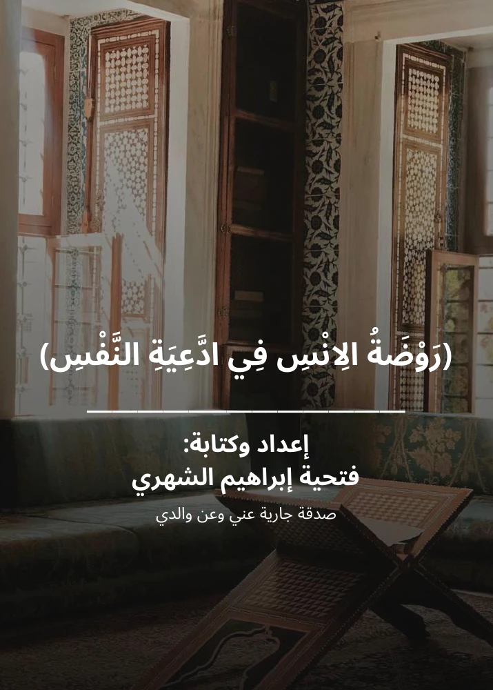

يعرض القارئ صفحات الكتاب الأصلية. استخراج النص العربي من هذا الملف غير موثوق، لذلك لا تتوفر نسخة نصية مهيأة لقارئات الشاشة.
جارٍ تجهيز الكتاب…

تعذّر تجهيز القارئ. يمكنك فتح النسخة الأصلية أو إعادة المحاولة.
فتح PDF الأصليفتحية إبراهيم الشهري
يعرض القارئ صفحات الكتاب الأصلية. استخراج النص العربي من هذا الملف غير موثوق، لذلك لا تتوفر نسخة نصية مهيأة لقارئات الشاشة.

تعذّر تجهيز القارئ. يمكنك فتح النسخة الأصلية أو إعادة المحاولة.
فتح PDF الأصلي